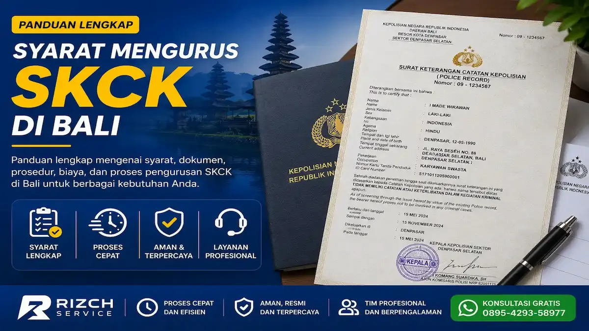

Syarat Mengurus SKCK di Bali Terbaru
Daftar Isi
Apa itu SKCK?
SKCK (Surat Keterangan Catatan Kepolisian) adalah dokumen resmi yang dikeluarkan oleh Kepolisian Republik Indonesia sebagai bukti bahwa pemegangnya tidak memiliki catatan kriminal atau terlibat dalam tindak pidana. Dokumen ini menjadi salah satu persyaratan penting dalam berbagai keperluan administrasi dan legal di Indonesia, termasuk di Bali.
Kegunaan SKCK — Untuk Apa Saja?
SKCK memiliki banyak kegunaan dalam kehidupan sehari-hari. Berikut adalah beberapa keperluan utama yang membutuhkan SKCK:
1. Syarat Melamar Kerja
Hampir semua perusahaan, baik swasta maupun BUMN, mensyaratkan SKCK sebagai bagian dari proses rekrutmen. Dokumen ini menjadi bukti integritas dan riwayat bersih calon karyawan.
2. Syarat Melanjutkan Studi
Beberapa institusi pendidikan tinggi, terutama untuk program magister, doktoral, atau pendidikan kedinasan, memerlukan SKCK sebagai syarat pendaftaran.
3. Syarat Perjalanan ke Luar Negeri
Untuk keperluan visa kerja, visa pelajar, atau imigrasi ke negara tertentu, SKCK sering diminta sebagai dokumen pendukung untuk membuktikan tidak ada catatan kriminal.
4. Syarat Pengurusan Dokumen Resmi Lainnya
SKCK juga diperlukan untuk pengurusan KITAS/KITAP, pendaftaran calon legislatif, pengurusan senjata api, dan berbagai keperluan administrasi pemerintah lainnya.
Syarat SKCK untuk WNI di Bali
Untuk Warga Negara Indonesia yang mengurus SKCK di Bali, berikut dokumen yang perlu disiapkan:
- Fotokopi KTP asli (bukan scan)
- Fotokopi Kartu Keluarga (KK)
- Pas foto terbaru ukuran 4x6 cm (latar belakang merah)
- Surat pengantar dari RT/RW (untuk keperluan tertentu)
- Mengisi formulir permohonan SKCK di kantor polisi
Syarat SKCK untuk WNA di Bali
Bagi Warga Negara Asing yang tinggal di Bali dan memerlukan SKCK, dokumen yang diperlukan:
- Paspor asli dan fotokopi
- KITAS/KITAP asli dan fotokopi
- Surat keterangan domisili dari kelurahan setempat
- Pas foto terbaru
- Surat pengantar dari sponsor atau perusahaan (jika ada)
Biaya Resmi vs Biaya Biro Jasa SKCK Bali
Pengurusan SKCK di kantor polisi secara resmi dikenakan biaya administrasi sesuai ketentuan pemerintah. Namun, prosesnya memerlukan waktu dan kedatangan langsung ke kantor polisi.
Dengan menggunakan biro jasa SKCK Bali seperti Rizch Bali, Anda mendapatkan kemudahan:
- Tidak perlu antre panjang di kantor polisi
- Dokumen dijemput dan diantar ke lokasi Anda
- Proses lebih cepat dan terjadwal
- Konsultasi gratis mengenai kelengkapan dokumen
- Update status pengurusan via WhatsApp
*Biaya biro jasa bervariasi tergantung jenis keperluan dan kelengkapan dokumen. Hubungi kami untuk estimasi biaya transparan.
Baca Juga Artikel Terkait
Lama Proses SKCK di Bali
Untuk pengurusan reguler, SKCK biasanya selesai dalam 2-3 hari kerja setelah dokumen lengkap diterima. Untuk keperluan mendesak, tanyakan opsi pengurusan cepat kepada tim kami.
Cara Antar Jemput Dokumen SKCK
Rizch Bali menyediakan layanan antar jemput dokumen untuk wilayah Denpasar, Badung, Gianyar, Tabanan, dan seluruh Bali. Caranya mudah:
- Hubungi kami via WhatsApp untuk konsultasi
- Kirim foto dokumen untuk pengecekan kelengkapan
- Tim kami jemput dokumen asli di lokasi Anda
- Proses pengurusan di kantor polisi
- SKCK diantar kembali ke tangan Anda
FAQ SKCK
SKCK berlaku selama 6 bulan sejak tanggal diterbitkan. Setelah itu, perlu diperpanjang dengan pengurusan baru.
Ya, dengan surat kuasa bermaterai dan fotokopi KTP pemberi kuasa. Atau gunakan layanan biro jasa kami untuk kemudahan tanpa ribet.
Ya, SKCK yang dikeluarkan oleh Kepolisian Republik Indonesia berlaku di seluruh wilayah Indonesia. Untuk keperluan luar negeri, pastikan SKCK diterjemahkan ke bahasa Inggris (Sworn Translation) jika diperlukan.
Biaya resmi SKCK sesuai ketentuan pemerintah. Untuk layanan biro jasa, biaya bervariasi tergantung kelengkapan dokumen dan lokasi. Hubungi Rizch Bali untuk estimasi biaya transparan.
SKCK diurus di kantor polisi terdekat, seperti Polresta Denpasar, Polres Badung, Polres Gianyar, atau Polres Tabanan. Rizch Bali bisa membantu proses di seluruh wilayah Bali.
Butuh Bantuan Pengurusan SKCK di Bali?
Tim Rizch Bali siap membantu pengurusan SKCK Anda dengan proses cepat, aman, dan layanan antar jemput dokumen.
Konsultasi Gratis